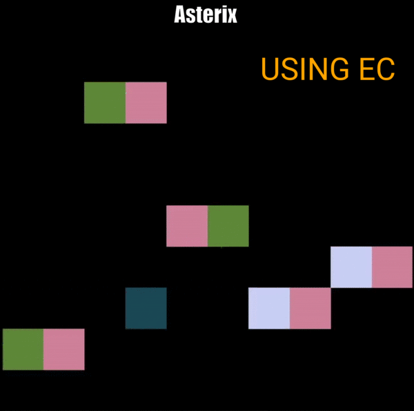
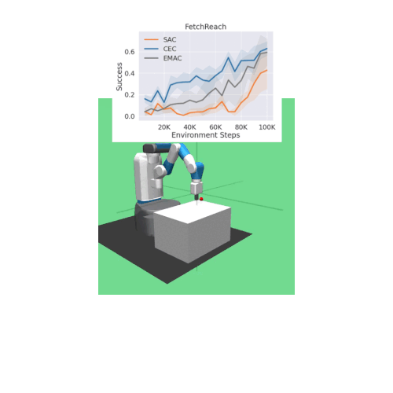
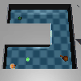
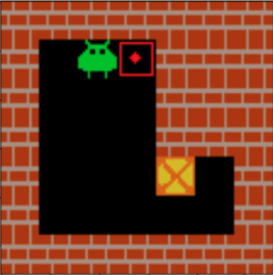

Publications

Zhao Yang, etc. Mike Preuss, Aske Plaat Edward S. Hu
Preprint, in submission.
Paper | Website | Website (for review)
Keywords: World Models, Autonomy, Unsupervised RL

Zhao Yang, Mike Preuss, Aske Plaat
COG, 2023; EWRL, 2023
Paper | Code
Combine episodic control (EC) and RL together. The agent learns to automatically switch between EC and RL.

Zhao Yang, Mike Preuss, Aske Plaat
COG, 2023; EWRL, 2023
Paper | Code
Use episodic memory directly for continuous action selection. It outperforms SOTA RL agents.

Zhao Yang, Mike Preuss, Aske Plaat
ICAART, 2023; ALOE workshop @ICLR, 2022
Paper
Systematically illustrate that why and how Go-Explore works in tabular and deep RL settings. Explore ('exp') can help the agent step into unseen areas.

Zhao Yang, Aske Plaat
BNAIC, 2021
Paper | Code
Pre-train and fine-tune neural networks on Sokoban tasks. Agents pre-trained in 1-box tasks can learn faster in 2/3-box tasks, but not vice versa.
Template based on Hyunseung's website. Latest update: 08/2024.